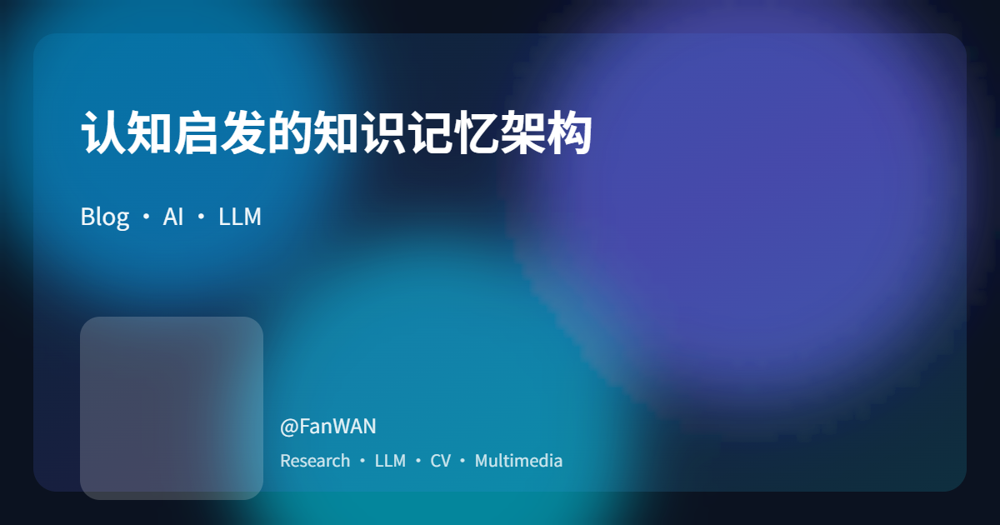
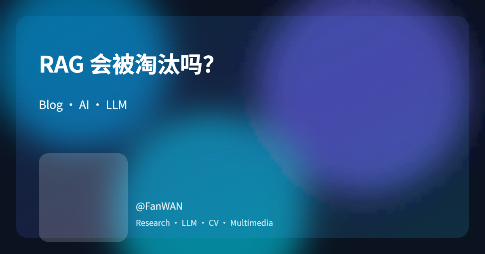
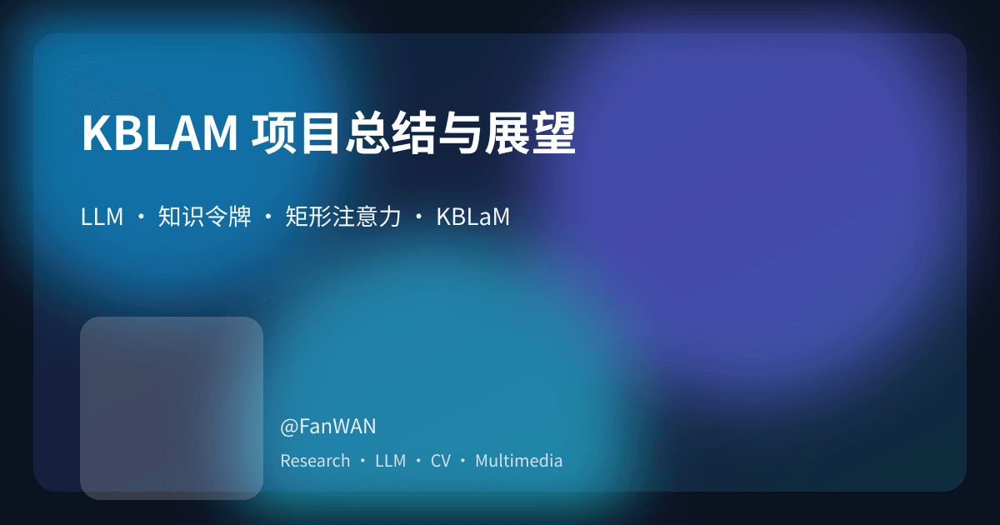

多语言原创内容实时更新 Original content, synced across languages Contenido original en varias lenguas
内容筛选面板
Filter your reading
Filtra tus lecturas
按主题快速定位文章
Surface the right posts instantly
Encuentra al instante lo que necesitas
一次创作，全球读者同步 Write once, reach every reader Una voz, lectores globales
保持创作节奏，持续迭代洞察 Fresh notes, steady iteration Notas frescas, iteración constante
按 ISO 日期列出 ISO date format Formato ISO

认知启发的知识记忆架构 Cognitively-Inspired Knowledge Memory Architecture Cognitively-Inspired Knowledge Memory Architecture
发表于 2025-10-16 Published on 2025-10-16 Publicado el 2025-10-16
基于“双轨解耦式行业适配” 框架的深度分析以及改进。 A deep analysis and improvement of the "Dual-Track Decoupled Industry Adaptation" framework. A deep analysis and improvement of the "Dual-Track Decoupled Industry Adaptation" framework.

双轨解耦式大模型行业适配框架 Dual-Track Decoupled Large Model Industry Adaptation Framework Marco de Adaptación Industrial de Modelos de Gran Tamaño con Desacoplamiento de Doble Vía
发表于 2025-10-13 Published on 2025-10-13 Publicado el 2025-10-13
聚焦大模型在高合规行业的适配问题，提出 “双轨解耦式行业适配” 框架。 Focusing on the adaptation challenges of large models in highly regulated industries, we propose a \"Dual-Track Decoupled Industry Adaptation\" framework. Se centra en el problema de adaptación de los grandes modelos lingüísticos en industrias altamente reguladas y propone el marco de \"Adaptación Industrial de Doble Vía Desacoplada\".

RAG 会被淘汰吗？ Is RAG obsolete? ¿Está obsoleto RAG?
发表于 2025-09-04 Published on 2025-09-04 Publicado el 2025-09-04
RAG 不会被淘汰，被淘汰的是“天真向量检索 + 生搬硬塞上下文”。本文给出 2025 年 RAG 五件套、评测维度、选型矩阵与 KBLaM 落地范式。 RAG isn’t dying—naïve vector RAG with context dumping is. This updated 2025 guide explains why long context can’t replace RAG, how to modernize RAG with GraphRAG and Retrieval‑Aware Training, and how to land it with KBLaM in real systems. RAG no muere—lo que muere es el RAG ingenuo de volcar todo al prompt. Esta guía 2025 explica por qué el contexto largo no reemplaza a RAG, cómo modernizarlo con GraphRAG y entrenamiento consciente de recuperación, y cómo aterrizarlo con KBLaM en sistemas reales.

KBLAM 项目总结与展望 KBLaM Project Summary and Outlook Resumen y perspectivas del proyecto KBLaM
发表于 2025-09-03 Published on 2025-09-03 Publicado el 2025-09-03
回顾 KBLaM 理论与实验，总结国产服务器部署经验，制定未来训练计划，探讨中文化与改进方向。 A review of KBLaM theory and experiments, lessons from deploying on indigenous servers, a concrete training plan, and thoughts on Chinese localization and future improvements. Revisión de la teoría y los experimentos de KBLaM, lecciones de un despliegue en servidores nacionales, un plan de entrenamiento concreto y una propuesta de localización al chino con mejoras futuras.
未找到匹配文章，请调整筛选条件或关键字。
No posts match the current filters. Try a different keyword or reset the filters.
No hay entradas que coincidan con los filtros. Prueba con otra palabra clave o reinicia los filtros.